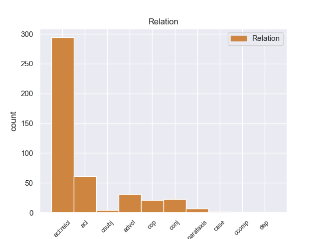
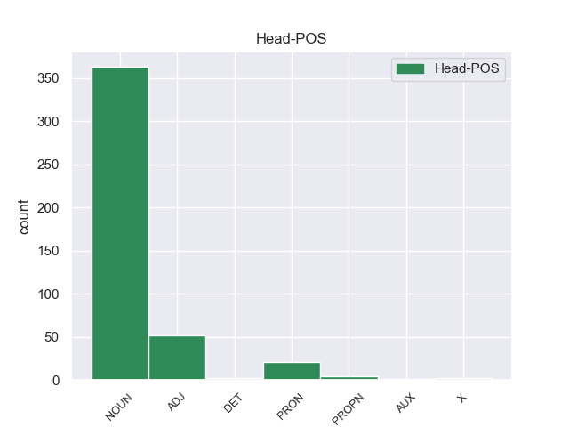
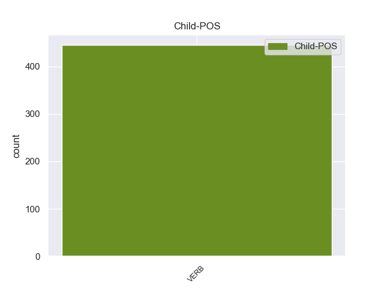

Distribution of features within this leaf



Agreement Rules sorted by frequency.
- When the dependent token is the relative clause modifier(acl:relcl) of the head token, and the head token is NOUN and the dependent token is VERB.
1 Μέχρι _ _ _ _ 0 _ _ _
2 στιγμής _ _ _ _ 0 _ _ _
3 , _ _ _ _ 0 _ _ _
4 δεν _ _ _ _ 0 _ _ _
5 ακούσαμε _ _ _ _ 0 _ _ _
6 τίποτα _ _ _ _ 0 _ _ _
7 σήμερα _ _ _ _ 0 _ _ _
8 το _ _ _ _ 0 _ _ _
9 απόγευμα _ _ _ _ 0 _ _ _
10 για _ _ _ _ 0 _ _ _
11 τα _ _ _ _ 0 _ _ _
12 άτομα άτομ NOUN _ Gender=Fem|Number=Plur 0 _ _ _
13 που _ _ _ _ 0 _ _ _
14 κινούν _ _ _ _ 0 _ _ _
15 την _ _ _ _ 0 _ _ _
16 οικονομία _ _ _ _ 0 _ _ _
17 επειδή _ _ _ _ 0 _ _ _
18 αποκτούν αποκτr VERB _ Mood=Ind|Number=Plur|Person=3|Tense=Pres|VerbForm=Fin 12 acl:relcl _ _
19 ανοικτή _ _ _ _ 0 _ _ _
20 πρόσβαση _ _ _ _ 0 _ _ _
21 σε _ _ _ _ 0 _ _ _
22 διαγωνισμούς _ _ _ _ 0 _ _ _
23 , _ _ _ _ 0 _ _ _
24 με _ _ _ _ 0 _ _ _
25 φθηνό _ _ _ _ 0 _ _ _
26 και _ _ _ _ 0 _ _ _
27 ευχερή _ _ _ _ 0 _ _ _
28 τρόπο _ _ _ _ 0 _ _ _
29 μέσω _ _ _ _ 0 _ _ _
30 της _ _ _ _ 0 _ _ _
31 ηλεκτρονικής _ _ _ _ 0 _ _ _
32 οδού _ _ _ _ 0 _ _ _
33 . _ _ _ _ 0 _ _ _
1 Πιστεύουμε _ _ _ _ 0 _ _ _
2 ότι _ _ _ _ 0 _ _ _
3 είναι _ _ _ _ 0 _ _ _
4 απαραίτητη _ _ _ _ 0 _ _ _
5 μία _ _ _ _ 0 _ _ _
6 αποφασιστική _ _ _ _ 0 _ _ _
7 απάντηση απάντηση NOUN _ Gender=Fem|Number=Sing 0 _ _ _
8 καθοδηγημένη καθοδηγημένo VERB _ Gender=Fem|Number=Sing|VerbForm=Part 7 acl _ _
9 από _ _ _ _ 0 _ _ _
10 την _ _ _ _ 0 _ _ _
11 Επιτροπή _ _ _ _ 0 _ _ _
12 . _ _ _ _ 0 _ _ _
1 Επιθυμώ _ _ _ _ 0 _ _ _
2 επίσης _ _ _ _ 0 _ _ _
3 να _ _ _ _ 0 _ _ _
4 συγχαρώ _ _ _ _ 0 _ _ _
5 τον _ _ _ _ 0 _ _ _
6 εισηγητή _ _ _ _ 0 _ _ _
7 και _ _ _ _ 0 _ _ _
8 όλους _ _ _ _ 0 _ _ _
9 τους _ _ _ _ 0 _ _ _
10 συντάκτες _ _ _ _ 0 _ _ _
11 γνωμοδοτήσεων _ _ _ _ 0 _ _ _
12 για _ _ _ _ 0 _ _ _
13 την _ _ _ _ 0 _ _ _
14 εργασία _ _ _ _ 0 _ _ _
15 τους _ _ _ _ 0 _ _ _
16 σε _ _ _ _ 0 _ _ _
17 αυτό αυτό PRON _ Gender=Masc|Number=Sing 0 _ _ _
18 που _ _ _ _ 0 _ _ _
19 εκ _ _ _ _ 0 _ _ _
20 πρώτης _ _ _ _ 0 _ _ _
21 όψεως _ _ _ _ 0 _ _ _
22 φαίνεται φαίνεταιr VERB _ Mood=Ind|Number=Sing|Person=3|Tense=Pres|VerbForm=Fin 17 acl:relcl _ _
23 ένα _ _ _ _ 0 _ _ _
24 πολύ _ _ _ _ 0 _ _ _
25 απλό _ _ _ _ 0 _ _ _
26 θέμα _ _ _ _ 0 _ _ _
27 , _ _ _ _ 0 _ _ _
28 αλλά _ _ _ _ 0 _ _ _
29 όταν _ _ _ _ 0 _ _ _
30 υπεισέρχεται _ _ _ _ 0 _ _ _
31 κανείς _ _ _ _ 0 _ _ _
32 σ _ _ _ _ 0 _ _ _
33 τις _ _ _ _ 0 _ _ _
34 λεπτομέρειες _ _ _ _ 0 _ _ _
35 και _ _ _ _ 0 _ _ _
36 σ _ _ _ _ 0 _ _ _
37 την _ _ _ _ 0 _ _ _
38 ανάλυσή _ _ _ _ 0 _ _ _
39 του _ _ _ _ 0 _ _ _
40 , _ _ _ _ 0 _ _ _
41 αποδεικνύεται _ _ _ _ 0 _ _ _
42 εξαιρετικά _ _ _ _ 0 _ _ _
43 δύσκολο _ _ _ _ 0 _ _ _
44 . _ _ _ _ 0 _ _ _
1 Οι _ _ _ _ 0 _ _ _
2 τροπολογίες _ _ _ _ 0 _ _ _
3 σχετικά _ _ _ _ 0 _ _ _
4 με _ _ _ _ 0 _ _ _
5 την _ _ _ _ 0 _ _ _
6 σταδιακή _ _ _ _ 0 _ _ _
7 εφαρμογή _ _ _ _ 0 _ _ _
8 του _ _ _ _ 0 _ _ _
9 κανονισμού _ _ _ _ 0 _ _ _
10 για _ _ _ _ 0 _ _ _
11 οδηγούς _ _ _ _ 0 _ _ _
12 από _ _ _ _ 0 _ _ _
13 χώρες _ _ _ _ 0 _ _ _
14 εκτός _ _ _ _ 0 _ _ _
15 Ένωσης _ _ _ _ 0 _ _ _
16 και _ _ _ _ 0 _ _ _
17 για _ _ _ _ 0 _ _ _
18 οδηγούς _ _ _ _ 0 _ _ _
19 από _ _ _ _ 0 _ _ _
20 χώρες _ _ _ _ 0 _ _ _
21 μέλη _ _ _ _ 0 _ _ _
22 δεν _ _ _ _ 0 _ _ _
23 έγιναν έγιν VERB _ Mood=Ind|Number=Plur|Person=3|Tense=Past|VerbForm=Fin 25 cop _ _
24 άμεσα _ _ _ _ 0 _ _ _
25 δεκτές δεκτέ ADJ _ Gender=Masc|Number=Plur 0 _ _ _
26 από _ _ _ _ 0 _ _ _
27 το _ _ _ _ 0 _ _ _
28 Συμβούλιο _ _ _ _ 0 _ _ _
29 . _ _ _ _ 0 _ _ _
1 Καταρχάς _ _ _ _ 0 _ _ _
2 , _ _ _ _ 0 _ _ _
3 όσον _ _ _ _ 0 _ _ _
4 αφορά _ _ _ _ 0 _ _ _
5 την _ _ _ _ 0 _ _ _
6 αύξηση _ _ _ _ 0 _ _ _
7 των _ _ _ _ 0 _ _ _
8 ορίων _ _ _ _ 0 _ _ _
9 για _ _ _ _ 0 _ _ _
10 το _ _ _ _ 0 _ _ _
11 πότε _ _ _ _ 0 _ _ _
12 οι _ _ _ _ 0 _ _ _
13 προσφορές _ _ _ _ 0 _ _ _
14 θα _ _ _ _ 0 _ _ _
15 πρέπει _ _ _ _ 0 _ _ _
16 να _ _ _ _ 0 _ _ _
17 τεθούν _ _ _ _ 0 _ _ _
18 σε _ _ _ _ 0 _ _ _
19 διαβούλευση _ _ _ _ 0 _ _ _
20 , _ _ _ _ 0 _ _ _
21 η _ _ _ _ 0 _ _ _
22 απαίτηση _ _ _ _ 0 _ _ _
23 για _ _ _ _ 0 _ _ _
24 αύξηση _ _ _ _ 0 _ _ _
25 50% _ _ _ _ 0 _ _ _
26 είναι _ _ _ _ 0 _ _ _
27 σημαντική σημαντικo ADJ _ Number=Sing 0 _ _ _
28 διότι _ _ _ _ 0 _ _ _
29 έχει _ _ _ _ 0 _ _ _
30 ήδη _ _ _ _ 0 _ _ _
31 αποδειχθεί αποδειχθr VERB _ Gender=Masc|Number=Sing|Tense=Past|VerbForm=Part 27 advcl _ _
32 ότι _ _ _ _ 0 _ _ _
33 τα _ _ _ _ 0 _ _ _
34 υφιστάμενα _ _ _ _ 0 _ _ _
35 όρια _ _ _ _ 0 _ _ _
36 δεν _ _ _ _ 0 _ _ _
37 επιτρέπουν _ _ _ _ 0 _ _ _
38 την _ _ _ _ 0 _ _ _
39 αύξηση _ _ _ _ 0 _ _ _
40 των _ _ _ _ 0 _ _ _
41 διασυνοριακών _ _ _ _ 0 _ _ _
42 ανταλλαγών _ _ _ _ 0 _ _ _
43 μεταξύ _ _ _ _ 0 _ _ _
44 εταιρειών _ _ _ _ 0 _ _ _
45 και _ _ _ _ 0 _ _ _
46 μεταξύ _ _ _ _ 0 _ _ _
47 εταιρειών _ _ _ _ 0 _ _ _
48 και _ _ _ _ 0 _ _ _
49 οργανισμών _ _ _ _ 0 _ _ _
50 . _ _ _ _ 0 _ _ _
1 La _ _ _ _ 0 _ _ _
2 apariencia _ _ _ _ 0 _ _ _
3 que _ _ _ _ 0 _ _ _
4 se _ _ _ _ 0 _ _ _
5 observa _ _ _ _ 0 _ _ _
6 desde _ _ _ _ 0 _ _ _
7 el _ _ _ _ 0 _ _ _
8 exterior _ _ _ _ 0 _ _ _
9 es _ _ _ _ 0 _ _ _
10 prácticamente _ _ _ _ 0 _ _ _
11 la _ _ _ _ 0 _ _ _
12 misma mismo NOUN _ Gender=Fem|Number=Sing 0 _ _ _
13 hoy _ _ _ _ 0 _ _ _
14 en _ _ _ _ 0 _ _ _
15 día _ _ _ _ 0 _ _ _
16 que _ _ _ _ 0 _ _ _
17 cuando _ _ _ _ 0 _ _ _
18 se _ _ _ _ 0 _ _ _
19 completó completar VERB _ Mood=Sub|Number=Sing|Person=3|Tense=Imp|VerbForm=Fin 12 advcl _ SpaceAfter=No
20 . _ _ _ _ 0 _ _ _
1 Η _ _ _ _ 0 _ _ _
2 Βεατρίκη _ _ _ _ 0 _ _ _
3 ανήλθε _ _ _ _ 0 _ _ _
4 σ _ _ _ _ 0 _ _ _
5 το _ _ _ _ 0 _ _ _
6 θρόνο _ _ _ _ 0 _ _ _
7 της _ _ _ _ 0 _ _ _
8 Ολλανδίας _ _ _ _ 0 _ _ _
9 σ _ _ _ _ 0 _ _ _
10 τις _ _ _ _ 0 _ _ _
11 30 _ _ _ _ 0 _ _ _
12 Απριλίου _ _ _ _ 0 _ _ _
13 1980 _ _ _ _ 0 _ _ _
14 και _ _ _ _ 0 _ _ _
15 οι _ _ _ _ 0 _ _ _
16 Ολλανδοί _ _ _ _ 0 _ _ _
17 δηλώνουν _ _ _ _ 0 _ _ _
18 πως _ _ _ _ 0 _ _ _
19 " _ _ _ _ 0 _ _ _
20 είναι _ _ _ _ 0 _ _ _
21 εργατική εργατικo ADJ _ Gender=Fem|Number=Sing 0 _ _ _
22 και _ _ _ _ 0 _ _ _
23 κατάφερε κατάφερar VERB _ Mood=Ind|Number=Sing|Person=3|Tense=Past|VerbForm=Fin 21 conj _ _
24 να _ _ _ _ 0 _ _ _
25 επαναφέρει _ _ _ _ 0 _ _ _
26 τη _ _ _ _ 0 _ _ _
27 δημοτικότητα _ _ _ _ 0 _ _ _
28 της _ _ _ _ 0 _ _ _
29 βασιλικής _ _ _ _ 0 _ _ _
30 οικογένειας _ _ _ _ 0 _ _ _
31 μετά _ _ _ _ 0 _ _ _
32 από _ _ _ _ 0 _ _ _
33 μια _ _ _ _ 0 _ _ _
34 σειρά _ _ _ _ 0 _ _ _
35 σκανδάλων _ _ _ _ 0 _ _ _
36 " _ _ _ _ 0 _ _ _
37 . _ _ _ _ 0 _ _ _
1 Σύμφωνα _ _ _ _ 0 _ _ _
2 με _ _ _ _ 0 _ _ _
3 την _ _ _ _ 0 _ _ _
4 έκθεση _ _ _ _ 0 _ _ _
5 , _ _ _ _ 0 _ _ _
6 οι _ _ _ _ 0 _ _ _
7 επιπτώσεις _ _ _ _ 0 _ _ _
8 της _ _ _ _ 0 _ _ _
9 οικονομικής _ _ _ _ 0 _ _ _
10 κρίσης _ _ _ _ 0 _ _ _
11 και _ _ _ _ 0 _ _ _
12 η _ _ _ _ 0 _ _ _
13 έξαρση _ _ _ _ 0 _ _ _
14 του _ _ _ _ 0 _ _ _
15 λαϊκισμού _ _ _ _ 0 _ _ _
16 αποτελούν αποτελούr VERB _ Mood=Ind|Number=Plur|Person=3|Tense=Pres|VerbForm=Fin 19 cop _ _
17 τα _ _ _ _ 0 _ _ _
18 κύρια _ _ _ _ 0 _ _ _
19 αίτια αίτ NOUN _ Gender=Fem|Number=Plur 0 _ _ _
20 της _ _ _ _ 0 _ _ _
21 φθοράς _ _ _ _ 0 _ _ _
22 που _ _ _ _ 0 _ _ _
23 υπέστη _ _ _ _ 0 _ _ _
24 η _ _ _ _ 0 _ _ _
25 ελευθερία _ _ _ _ 0 _ _ _
26 του _ _ _ _ 0 _ _ _
27 τύπου _ _ _ _ 0 _ _ _
28 σ _ _ _ _ 0 _ _ _
29 την _ _ _ _ 0 _ _ _
30 Ελλάδα _ _ _ _ 0 _ _ _
31 . _ _ _ _ 0 _ _ _
1 να _ _ _ _ 0 _ _ _
2 απαιτηθεί _ _ _ _ 0 _ _ _
3 η _ _ _ _ 0 _ _ _
4 απελευθέρωση _ _ _ _ 0 _ _ _
5 όλων _ _ _ _ 0 _ _ _
6 των _ _ _ _ 0 _ _ _
7 πολιτικών _ _ _ _ 0 _ _ _
8 κρατουμένων _ _ _ _ 0 _ _ _
9 , _ _ _ _ 0 _ _ _
10 η _ _ _ _ 0 _ _ _
11 αποκατάσταση _ _ _ _ 0 _ _ _
12 της _ _ _ _ 0 _ _ _
13 ελευθερίας ελευθερίας NOUN _ Gender=Fem|Number=Sing 0 _ _ _
14 του _ _ _ _ 0 _ _ _
15 Τύπου _ _ _ _ 0 _ _ _
16 , _ _ _ _ 0 _ _ _
17 του _ _ _ _ 0 _ _ _
18 συνεταιρίζεσθαι συνεταιρίζεσθαι VERB _ Gender=Masc|Number=Sing 13 conj _ _
19 , _ _ _ _ 0 _ _ _
20 της _ _ _ _ 0 _ _ _
21 συγκρότησης _ _ _ _ 0 _ _ _
22 οργανώσεων _ _ _ _ 0 _ _ _
23 της _ _ _ _ 0 _ _ _
24 κοινωνίας _ _ _ _ 0 _ _ _
25 των _ _ _ _ 0 _ _ _
26 πολιτών _ _ _ _ 0 _ _ _
27 , _ _ _ _ 0 _ _ _
28 του _ _ _ _ 0 _ _ _
29 σχηματισμού _ _ _ _ 0 _ _ _
30 πολιτικών _ _ _ _ 0 _ _ _
31 κομμάτων _ _ _ _ 0 _ _ _
32 και _ _ _ _ 0 _ _ _
33 συνδικάτων _ _ _ _ 0 _ _ _
34 . _ _ _ _ 0 _ _ _
1 Un _ _ _ _ 0 _ _ _
2 detalle detalle NOUN _ Gender=Masc|Number=Sing 0 _ _ _
3 es _ _ _ _ 0 _ _ _
4 que _ _ _ _ 0 _ _ _
5 la _ _ _ _ 0 _ _ _
6 placa _ _ _ _ 0 _ _ _
7 muestra mostrar VERB _ Mood=Ind|Number=Sing|Person=3|Tense=Pres|VerbForm=Fin 2 csubj _ _
8 incorrectamente _ _ _ _ 0 _ _ _
9 " _ _ _ _ 0 _ _ _
10 Rick _ _ _ _ 0 _ _ _
11 Flair _ _ _ _ 0 _ _ _
12 " _ _ _ _ 0 _ _ _
13 aunque _ _ _ _ 0 _ _ _
14 este _ _ _ _ 0 _ _ _
15 error _ _ _ _ 0 _ _ _
16 fue _ _ _ _ 0 _ _ _
17 corregido _ _ _ _ 0 _ _ _
18 a _ _ _ _ 0 _ _ _
19 la _ _ _ _ 0 _ _ _
20 brevedad _ _ _ _ 0 _ _ _
21 . _ _ _ _ 0 _ _ _
1 Philip philip PROPN _ Gender=Masc|Number=Sing 0 _ _ _
2 Pirrip _ _ _ _ 0 _ _ _
3 , _ _ _ _ 0 _ _ _
4 mejor _ _ _ _ 0 _ _ _
5 conocido conocido VERB _ Gender=Masc|Number=Sing|VerbForm=Part 1 acl _ _
6 como _ _ _ _ 0 _ _ _
7 " _ _ _ _ 0 _ _ _
8 Pip _ _ _ _ 0 _ _ _
9 " _ _ _ _ 0 _ _ _
10 , _ _ _ _ 0 _ _ _
11 un _ _ _ _ 0 _ _ _
12 niño _ _ _ _ 0 _ _ _
13 que _ _ _ _ 0 _ _ _
14 vive _ _ _ _ 0 _ _ _
15 con _ _ _ _ 0 _ _ _
16 su _ _ _ _ 0 _ _ _
17 hermana _ _ _ _ 0 _ _ _
18 y _ _ _ _ 0 _ _ _
19 su _ _ _ _ 0 _ _ _
20 cuñado _ _ _ _ 0 _ _ _
21 después _ _ _ _ 0 _ _ _
22 de _ _ _ _ 0 _ _ _
23 la _ _ _ _ 0 _ _ _
24 muerte _ _ _ _ 0 _ _ _
25 de _ _ _ _ 0 _ _ _
26 sus _ _ _ _ 0 _ _ _
27 padres _ _ _ _ 0 _ _ _
28 , _ _ _ _ 0 _ _ _
29 conoce _ _ _ _ 0 _ _ _
30 a _ _ _ _ 0 _ _ _
31 un _ _ _ _ 0 _ _ _
32 viejo _ _ _ _ 0 _ _ _
33 convicto _ _ _ _ 0 _ _ _
34 que _ _ _ _ 0 _ _ _
35 había _ _ _ _ 0 _ _ _
36 escapado _ _ _ _ 0 _ _ _
37 de _ _ _ _ 0 _ _ _
38 un _ _ _ _ 0 _ _ _
39 barco _ _ _ _ 0 _ _ _
40 - _ _ _ _ 0 _ _ _
41 prisión _ _ _ _ 0 _ _ _
42 mientras _ _ _ _ 0 _ _ _
43 visitaba _ _ _ _ 0 _ _ _
44 la _ _ _ _ 0 _ _ _
45 tumba _ _ _ _ 0 _ _ _
46 de _ _ _ _ 0 _ _ _
47 sus _ _ _ _ 0 _ _ _
48 progenitores _ _ _ _ 0 _ _ _
49 . _ _ _ _ 0 _ _ _
1 Εξίσου _ _ _ _ 0 _ _ _
2 σημαντική σημαντικo ADJ _ Number=Sing 0 _ _ _
3 ήταν _ _ _ _ 0 _ _ _
4 η _ _ _ _ 0 _ _ _
5 πτώση _ _ _ _ 0 _ _ _
6 που _ _ _ _ 0 _ _ _
7 σημείωσαν _ _ _ _ 0 _ _ _
8 και _ _ _ _ 0 _ _ _
9 οι _ _ _ _ 0 _ _ _
10 ΗΠΑ _ _ _ _ 0 _ _ _
11 σ _ _ _ _ 0 _ _ _
12 την _ _ _ _ 0 _ _ _
13 ίδια _ _ _ _ 0 _ _ _
14 έκθεση _ _ _ _ 0 _ _ _
15 μετά _ _ _ _ 0 _ _ _
16 το _ _ _ _ 0 _ _ _
17 κυνήγι _ _ _ _ 0 _ _ _
18 σ _ _ _ _ 0 _ _ _
19 το _ _ _ _ 0 _ _ _
20 οποίο _ _ _ _ 0 _ _ _
21 έχει _ _ _ _ 0 _ _ _
22 επιδοθεί _ _ _ _ 0 _ _ _
23 η _ _ _ _ 0 _ _ _
24 αμερικανική _ _ _ _ 0 _ _ _
25 κυβέρνηση _ _ _ _ 0 _ _ _
26 προς _ _ _ _ 0 _ _ _
27 τους _ _ _ _ 0 _ _ _
28 υπεύθυνους _ _ _ _ 0 _ _ _
29 διαρροών _ _ _ _ 0 _ _ _
30 κρατικών _ _ _ _ 0 _ _ _
31 μυστικών _ _ _ _ 0 _ _ _
32 , _ _ _ _ 0 _ _ _
33 γεγονός _ _ _ _ 0 _ _ _
34 που _ _ _ _ 0 _ _ _
35 λειτουργεί _ _ _ _ 0 _ _ _
36 ως _ _ _ _ 0 _ _ _
37 " _ _ _ _ 0 _ _ _
38 προειδοποίηση _ _ _ _ 0 _ _ _
39 για _ _ _ _ 0 _ _ _
40 οποιονδήποτε _ _ _ _ 0 _ _ _
41 επιχειρήσει _ _ _ _ 0 _ _ _
42 αντίστοιχες _ _ _ _ 0 _ _ _
43 ενέργειες _ _ _ _ 0 _ _ _
44 " _ _ _ _ 0 _ _ _
45 , _ _ _ _ 0 _ _ _
46 αναφέρεται αναφέρεταιr VERB _ Mood=Ind|Number=Sing|Person=3|Tense=Pres|VerbForm=Fin 2 parataxis _ _
47 σ _ _ _ _ 0 _ _ _
48 την _ _ _ _ 0 _ _ _
49 έκθεση _ _ _ _ 0 _ _ _
50 των _ _ _ _ 0 _ _ _
51 " _ _ _ _ 0 _ _ _
52 Δημοσιογράφων _ _ _ _ 0 _ _ _
53 Χωρίς _ _ _ _ 0 _ _ _
54 Σύνορα _ _ _ _ 0 _ _ _
55 " _ _ _ _ 0 _ _ _
56 . _ _ _ _ 0 _ _ _
1 La _ _ _ _ 0 _ _ _
2 hidrocefalia _ _ _ _ 0 _ _ _
3 ( _ _ _ _ 0 _ _ _
4 término _ _ _ _ 0 _ _ _
5 que _ _ _ _ 0 _ _ _
6 deriva _ _ _ _ 0 _ _ _
7 de _ _ _ _ 0 _ _ _
8 las _ _ _ _ 0 _ _ _
9 palabras _ _ _ _ 0 _ _ _
10 griegas _ _ _ _ 0 _ _ _
11 « _ _ _ _ 0 _ _ _
12 hidro _ _ _ _ 0 _ _ _
13 » _ _ _ _ 0 _ _ _
14 que _ _ _ _ 0 _ _ _
15 significa _ _ _ _ 0 _ _ _
16 agua _ _ _ _ 0 _ _ _
17 y _ _ _ _ 0 _ _ _
18 « _ _ _ _ 0 _ _ _
19 céfalo céfalo X _ Gender=Masc|Number=Sing 0 _ _ _
20 » _ _ _ _ 0 _ _ _
21 que _ _ _ _ 0 _ _ _
22 significa significar VERB _ Mood=Ind|Number=Sing|Person=3|Tense=Pres|VerbForm=Fin 19 acl:relcl _ _
23 cabeza _ _ _ _ 0 _ _ _
24 ) _ _ _ _ 0 _ _ _
25 es _ _ _ _ 0 _ _ _
26 un _ _ _ _ 0 _ _ _
27 trastorno _ _ _ _ 0 _ _ _
28 cuya _ _ _ _ 0 _ _ _
29 principal _ _ _ _ 0 _ _ _
30 característica _ _ _ _ 0 _ _ _
31 es _ _ _ _ 0 _ _ _
32 la _ _ _ _ 0 _ _ _
33 acumulación _ _ _ _ 0 _ _ _
34 excesiva _ _ _ _ 0 _ _ _
35 de _ _ _ _ 0 _ _ _
36 líquido _ _ _ _ 0 _ _ _
37 en _ _ _ _ 0 _ _ _
38 el _ _ _ _ 0 _ _ _
39 cerebro _ _ _ _ 0 _ _ _
40 . _ _ _ _ 0 _ _ _
1 Pensamos _ _ _ _ 0 _ _ _
2 en _ _ _ _ 0 _ _ _
3 pequeño _ _ _ _ 0 _ _ _
4 , _ _ _ _ 0 _ _ _
5 en _ _ _ _ 0 _ _ _
6 cositas _ _ _ _ 0 _ _ _
7 , _ _ _ _ 0 _ _ _
8 en _ _ _ _ 0 _ _ _
9 solucionar _ _ _ _ 0 _ _ _
10 lo _ _ _ _ 0 _ _ _
11 inmediato _ _ _ _ 0 _ _ _
12 y _ _ _ _ 0 _ _ _
13 en _ _ _ _ 0 _ _ _
14 resistir _ _ _ _ 0 _ _ _
15 se _ _ _ _ 0 _ _ _
16 a _ _ _ _ 0 _ _ _
17 abordar _ _ _ _ 0 _ _ _
18 lo _ _ _ _ 0 _ _ _
19 mediato _ _ _ _ 0 _ _ _
20 , _ _ _ _ 0 _ _ _
21 lo él PRON _ Case=Acc|Gender=Masc|Number=Sing|Person=3|PrepCase=Npr|PronType=Prs 0 _ _ _
22 que _ _ _ _ 0 _ _ _
23 va ir VERB _ Mood=Ind|Number=Sing|Person=3|Tense=Pres|VerbForm=Fin 21 conj _ _
24 más _ _ _ _ 0 _ _ _
25 allá _ _ _ _ 0 _ _ _
26 de _ _ _ _ 0 _ _ _
27 lo _ _ _ _ 0 _ _ _
28 próximo _ _ _ _ 0 _ _ _
29 , _ _ _ _ 0 _ _ _
30 para _ _ _ _ 0 _ _ _
31 evitar _ _ _ _ 0 _ _ _
32 las _ _ _ _ 0 _ _ _
33 consecuencias _ _ _ _ 0 _ _ _
34 de _ _ _ _ 0 _ _ _
35 la _ _ _ _ 0 _ _ _
36 improvisación _ _ _ _ 0 _ _ _
37 y _ _ _ _ 0 _ _ _
38 para _ _ _ _ 0 _ _ _
39 advertir _ _ _ _ 0 _ _ _
40 y _ _ _ _ 0 _ _ _
41 asumir _ _ _ _ 0 _ _ _
42 con _ _ _ _ 0 _ _ _
43 propiedad _ _ _ _ 0 _ _ _
44 las _ _ _ _ 0 _ _ _
45 dimensiones _ _ _ _ 0 _ _ _
46 de _ _ _ _ 0 _ _ _
47 el _ _ _ _ 0 _ _ _
48 crecimiento _ _ _ _ 0 _ _ _
49 y _ _ _ _ 0 _ _ _
50 los _ _ _ _ 0 _ _ _
51 requerimientos _ _ _ _ 0 _ _ _
52 de _ _ _ _ 0 _ _ _
53 los _ _ _ _ 0 _ _ _
54 nuevos _ _ _ _ 0 _ _ _
55 tiempos _ _ _ _ 0 _ _ _
56 . _ _ _ _ 0 _ _ _
1 La _ _ _ _ 0 _ _ _
2 corrupción _ _ _ _ 0 _ _ _
3 política _ _ _ _ 0 _ _ _
4 es _ _ _ _ 0 _ _ _
5 el _ _ _ _ 0 _ _ _
6 uso _ _ _ _ 0 _ _ _
7 indebido _ _ _ _ 0 _ _ _
8 de _ _ _ _ 0 _ _ _
9 los _ _ _ _ 0 _ _ _
10 dineros _ _ _ _ 0 _ _ _
11 públicos _ _ _ _ 0 _ _ _
12 por _ _ _ _ 0 _ _ _
13 el _ _ _ _ 0 _ _ _
14 gobierno _ _ _ _ 0 _ _ _
15 , _ _ _ _ 0 _ _ _
16 a _ _ _ _ 0 _ _ _
17 objeto _ _ _ _ 0 _ _ _
18 de _ _ _ _ 0 _ _ _
19 alcanzar _ _ _ _ 0 _ _ _
20 una _ _ _ _ 0 _ _ _
21 ventaja _ _ _ _ 0 _ _ _
22 secreta _ _ _ _ 0 _ _ _
23 , _ _ _ _ 0 _ _ _
24 privada _ _ _ _ 0 _ _ _
25 e _ _ _ _ 0 _ _ _
26 ilegítima _ _ _ _ 0 _ _ _
27 , _ _ _ _ 0 _ _ _
28 para _ _ _ _ 0 _ _ _
29 financiar _ _ _ _ 0 _ _ _
30 proyectos _ _ _ _ 0 _ _ _
31 hegemónicos _ _ _ _ 0 _ _ _
32 sin _ _ _ _ 0 _ _ _
33 controles _ _ _ _ 0 _ _ _
34 ni _ _ _ _ 0 _ _ _
35 rendición _ _ _ _ 0 _ _ _
36 de _ _ _ _ 0 _ _ _
37 cuentas _ _ _ _ 0 _ _ _
38 , _ _ _ _ 0 _ _ _
39 mediante _ _ _ _ 0 _ _ _
40 ardides _ _ _ _ 0 _ _ _
41 pseudolegales _ _ _ _ 0 _ _ _
42 , _ _ _ _ 0 _ _ _
43 utilizando _ _ _ _ 0 _ _ _
44 presupuestos _ _ _ _ 0 _ _ _
45 paralelos _ _ _ _ 0 _ _ _
46 a _ _ _ _ 0 _ _ _
47 los él PRON _ Case=Acc|Gender=Masc|Number=Plur|Person=3|PrepCase=Npr|PronType=Prs 0 _ _ _
48 aprobados aprobado VERB _ Gender=Masc|Number=Plur|VerbForm=Part 47 acl _ _
49 por _ _ _ _ 0 _ _ _
50 la _ _ _ _ 0 _ _ _
51 autoridad _ _ _ _ 0 _ _ _
52 legislativa _ _ _ _ 0 _ _ _
53 . _ _ _ _ 0 _ _ _
1 Posteriormente _ _ _ _ 0 _ _ _
2 , _ _ _ _ 0 _ _ _
3 la _ _ _ _ 0 _ _ _
4 ciudad _ _ _ _ 0 _ _ _
5 volvió _ _ _ _ 0 _ _ _
6 a _ _ _ _ 0 _ _ _
7 ser _ _ _ _ 0 _ _ _
8 habitada _ _ _ _ 0 _ _ _
9 , _ _ _ _ 0 _ _ _
10 aunque _ _ _ _ 0 _ _ _
11 más _ _ _ _ 0 _ _ _
12 tarde _ _ _ _ 0 _ _ _
13 fue _ _ _ _ 0 _ _ _
14 abandonada _ _ _ _ 0 _ _ _
15 por _ _ _ _ 0 _ _ _
16 segunda _ _ _ _ 0 _ _ _
17 vez _ _ _ _ 0 _ _ _
18 debido deber VERB _ Gender=Masc|Number=Sing|Tense=Past|VerbForm=Part 21 case _ _
19 a _ _ _ _ 0 _ _ _
20 un _ _ _ _ 0 _ _ _
21 ataque ataque NOUN _ Gender=Masc|Number=Sing 0 _ _ _
22 de _ _ _ _ 0 _ _ _
23 invasores _ _ _ _ 0 _ _ _
24 procedentes _ _ _ _ 0 _ _ _
25 de _ _ _ _ 0 _ _ _
26 Shiraz _ _ _ _ 0 _ _ _
27 . _ _ _ _ 0 _ _ _
1 Asimismo _ _ _ _ 0 _ _ _
2 , _ _ _ _ 0 _ _ _
3 agrega _ _ _ _ 0 _ _ _
4 que _ _ _ _ 0 _ _ _
5 , _ _ _ _ 0 _ _ _
6 con _ _ _ _ 0 _ _ _
7 esta _ _ _ _ 0 _ _ _
8 omisión _ _ _ _ 0 _ _ _
9 diagnóstica _ _ _ _ 0 _ _ _
10 , _ _ _ _ 0 _ _ _
11 ' _ _ _ _ 0 _ _ _
12 se _ _ _ _ 0 _ _ _
13 privó _ _ _ _ 0 _ _ _
14 a _ _ _ _ 0 _ _ _
15 la _ _ _ _ 0 _ _ _
16 paciente _ _ _ _ 0 _ _ _
17 de _ _ _ _ 0 _ _ _
18 una _ _ _ _ 0 _ _ _
19 alternativa _ _ _ _ 0 _ _ _
20 a _ _ _ _ 0 _ _ _
21 el _ _ _ _ 0 _ _ _
22 tratamiento _ _ _ _ 0 _ _ _
23 ' _ _ _ _ 0 _ _ _
24 , _ _ _ _ 0 _ _ _
25 de _ _ _ _ 0 _ _ _
26 forma forma NOUN _ Gender=Fem|Number=Sing 0 _ _ _
27 que _ _ _ _ 0 _ _ _
28 los _ _ _ _ 0 _ _ _
29 servicios _ _ _ _ 0 _ _ _
30 médicos _ _ _ _ 0 _ _ _
31 que _ _ _ _ 0 _ _ _
32 finalmente _ _ _ _ 0 _ _ _
33 la _ _ _ _ 0 _ _ _
34 atendieron _ _ _ _ 0 _ _ _
35 en _ _ _ _ 0 _ _ _
36 el _ _ _ _ 0 _ _ _
37 Hospital _ _ _ _ 0 _ _ _
38 Clínico _ _ _ _ 0 _ _ _
39 de _ _ _ _ 0 _ _ _
40 Santiago _ _ _ _ 0 _ _ _
41 podrían _ _ _ _ 0 _ _ _
42 haber _ _ _ _ 0 _ _ _
43 seguido seguir VERB _ Gender=Masc|Number=Sing|Tense=Past|VerbForm=Part 26 ccomp _ _
44 otros _ _ _ _ 0 _ _ _
45 parámetros _ _ _ _ 0 _ _ _
46 de _ _ _ _ 0 _ _ _
47 actuación _ _ _ _ 0 _ _ _
48 que _ _ _ _ 0 _ _ _
49 ayudasen _ _ _ _ 0 _ _ _
50 de _ _ _ _ 0 _ _ _
51 forma _ _ _ _ 0 _ _ _
52 más _ _ _ _ 0 _ _ _
53 efectiva _ _ _ _ 0 _ _ _
54 a _ _ _ _ 0 _ _ _
55 la _ _ _ _ 0 _ _ _
56 joven _ _ _ _ 0 _ _ _
57 . _ _ _ _ 0 _ _ _
1 Es _ _ _ _ 0 _ _ _
2 muy _ _ _ _ 0 _ _ _
3 raro raro ADJ _ Gender=Masc|Number=Sing 0 _ _ _
4 que _ _ _ _ 0 _ _ _
5 a _ _ _ _ 0 _ _ _
6 alguien _ _ _ _ 0 _ _ _
7 no _ _ _ _ 0 _ _ _
8 le _ _ _ _ 0 _ _ _
9 guste gustar VERB _ Mood=Sub|Number=Sing|Person=3|Tense=Pres|VerbForm=Fin 3 csubj _ _
10 nada _ _ _ _ 0 _ _ _
11 de _ _ _ _ 0 _ _ _
12 comer _ _ _ _ 0 _ _ _
13 y _ _ _ _ 0 _ _ _
14 puedes _ _ _ _ 0 _ _ _
15 estar _ _ _ _ 0 _ _ _
16 horas _ _ _ _ 0 _ _ _
17 y _ _ _ _ 0 _ _ _
18 horas _ _ _ _ 0 _ _ _
19 hablando _ _ _ _ 0 _ _ _
20 . _ _ _ _ 0 _ _ _
1 Nota nota NOUN _ Gender=Fem|Number=Sing 0 _ _ _
2 : _ _ _ _ 0 _ _ _
3 El _ _ _ _ 0 _ _ _
4 episodio _ _ _ _ 0 _ _ _
5 20 _ _ _ _ 0 _ _ _
6 no _ _ _ _ 0 _ _ _
7 contiene contener VERB _ Mood=Ind|Number=Sing|Person=3|Tense=Pres|VerbForm=Fin 1 dep _ _
8 opening _ _ _ _ 0 _ _ _
9 . _ _ _ _ 0 _ _ _
1 También _ _ _ _ 0 _ _ _
2 se _ _ _ _ 0 _ _ _
3 le _ _ _ _ 0 _ _ _
4 conoce _ _ _ _ 0 _ _ _
5 como _ _ _ _ 0 _ _ _
6 el _ _ _ _ 0 _ _ _
7 antiguo _ _ _ _ 0 _ _ _
8 Liceo liceo PROPN _ Gender=Masc|Number=Sing 0 _ _ _
9 Antioqueño _ _ _ _ 0 _ _ _
10 el _ _ _ _ 0 _ _ _
11 cual _ _ _ _ 0 _ _ _
12 estaba _ _ _ _ 0 _ _ _
13 adscrito adscrito VERB _ Gender=Masc|Number=Sing|VerbForm=Part 8 acl:relcl _ _
14 a _ _ _ _ 0 _ _ _
15 la _ _ _ _ 0 _ _ _
16 Universidad _ _ _ _ 0 _ _ _
17 y _ _ _ _ 0 _ _ _
18 prestaba _ _ _ _ 0 _ _ _
19 los _ _ _ _ 0 _ _ _
20 servicios _ _ _ _ 0 _ _ _
21 educativos _ _ _ _ 0 _ _ _
22 de _ _ _ _ 0 _ _ _
23 bachillerato _ _ _ _ 0 _ _ _
24 , _ _ _ _ 0 _ _ _
25 una _ _ _ _ 0 _ _ _
26 vez _ _ _ _ 0 _ _ _
27 éste _ _ _ _ 0 _ _ _
28 es _ _ _ _ 0 _ _ _
29 cerrado _ _ _ _ 0 _ _ _
30 en _ _ _ _ 0 _ _ _
31 1988 _ _ _ _ 0 _ _ _
32 , _ _ _ _ 0 _ _ _
33 pasa _ _ _ _ 0 _ _ _
34 a _ _ _ _ 0 _ _ _
35 ser _ _ _ _ 0 _ _ _
36 ocupado _ _ _ _ 0 _ _ _
37 directamente _ _ _ _ 0 _ _ _
38 por _ _ _ _ 0 _ _ _
39 la _ _ _ _ 0 _ _ _
40 Universidad _ _ _ _ 0 _ _ _
41 . _ _ _ _ 0 _ _ _
Disagree Examples:
1 De _ _ _ _ 0 _ _ _
2 Baba _ _ _ _ 0 _ _ _
3 Adam _ _ _ _ 0 _ _ _
4 se _ _ _ _ 0 _ _ _
5 dice _ _ _ _ 0 _ _ _
6 que _ _ _ _ 0 _ _ _
7 tuvo _ _ _ _ 0 _ _ _
8 un _ _ _ _ 0 _ _ _
9 contemporáneo _ _ _ _ 0 _ _ _
10 de _ _ _ _ 0 _ _ _
11 el _ _ _ _ 0 _ _ _
12 famoso _ _ _ _ 0 _ _ _
13 Rani _ _ _ _ 0 _ _ _
14 Bhawani _ _ _ _ 0 _ _ _
15 de _ _ _ _ 0 _ _ _
16 Natore _ _ _ _ 0 _ _ _
17 , _ _ _ _ 0 _ _ _
18 de _ _ _ _ 0 _ _ _
19 quien _ _ _ _ 0 _ _ _
20 se _ _ _ _ 0 _ _ _
21 dice _ _ _ _ 0 _ _ _
22 que _ _ _ _ 0 _ _ _
23 , _ _ _ _ 0 _ _ _
24 debido _ _ _ _ 0 _ _ _
25 a _ _ _ _ 0 _ _ _
26 sus _ _ _ _ 0 _ _ _
27 magnánimas _ _ _ _ 0 _ _ _
28 características _ _ _ _ 0 _ _ _
29 , _ _ _ _ 0 _ _ _
30 tuvo _ _ _ _ 0 _ _ _
31 un _ _ _ _ 0 _ _ _
32 depósito _ _ _ _ 0 _ _ _
33 en _ _ _ _ 0 _ _ _
34 el _ _ _ _ 0 _ _ _
35 lugar lugar NOUN _ Gender=Masc|Number=Sing 0 _ _ _
36 que _ _ _ _ 0 _ _ _
37 se _ _ _ _ 0 _ _ _
38 lo _ _ _ _ 0 _ _ _
39 dedicaron dedicar VERB _ Mood=Ind|Number=Plur|Person=3|Tense=Past|VerbForm=Fin 35 acl:relcl _ _
40 a _ _ _ _ 0 _ _ _
41 el _ _ _ _ 0 _ _ _
42 santo _ _ _ _ 0 _ _ _
43 fakir _ _ _ _ 0 _ _ _
44 en _ _ _ _ 0 _ _ _
45 honor _ _ _ _ 0 _ _ _
46 a _ _ _ _ 0 _ _ _
47 sus _ _ _ _ 0 _ _ _
48 poderes _ _ _ _ 0 _ _ _
49 sobrenaturales _ _ _ _ 0 _ _ _
50 . _ _ _ _ 0 _ _ _
1 El _ _ _ _ 0 _ _ _
2 Getafe _ _ _ _ 0 _ _ _
3 quiere _ _ _ _ 0 _ _ _
4 fichar _ _ _ _ 0 _ _ _
5 a _ _ _ _ 0 _ _ _
6 un _ _ _ _ 0 _ _ _
7 crack _ _ _ _ 0 _ _ _
8 en _ _ _ _ 0 _ _ _
9 la _ _ _ _ 0 _ _ _
10 delantera _ _ _ _ 0 _ _ _
11 y _ _ _ _ 0 _ _ _
12 si _ _ _ _ 0 _ _ _
13 aparecían aparecer VERB _ Mood=Ind|Number=Plur|Person=3|Tense=Imp|VerbForm=Fin 28 advcl _ _
14 no _ _ _ _ 0 _ _ _
15 hace _ _ _ _ 0 _ _ _
16 muchos _ _ _ _ 0 _ _ _
17 los _ _ _ _ 0 _ _ _
18 nombres _ _ _ _ 0 _ _ _
19 de _ _ _ _ 0 _ _ _
20 Morata _ _ _ _ 0 _ _ _
21 y _ _ _ _ 0 _ _ _
22 Dani _ _ _ _ 0 _ _ _
23 Güiza _ _ _ _ 0 _ _ _
24 ( _ _ _ _ 0 _ _ _
25 ver _ _ _ _ 0 _ _ _
26 artículo _ _ _ _ 0 _ _ _
27 ) _ _ _ _ 0 _ _ _
28 el el DET _ Definite=Def|Gender=Masc|Number=Sing|PronType=Art 0 _ _ _
29 que _ _ _ _ 0 _ _ _
30 ahora _ _ _ _ 0 _ _ _
31 colocan _ _ _ _ 0 _ _ _
32 es _ _ _ _ 0 _ _ _
33 el _ _ _ _ 0 _ _ _
34 fichaje _ _ _ _ 0 _ _ _
35 de _ _ _ _ 0 _ _ _
36 Caicedo _ _ _ _ 0 _ _ _
37 . _ _ _ _ 0 _ _ _
1 El _ _ _ _ 0 _ _ _
2 Getafe _ _ _ _ 0 _ _ _
3 quiere _ _ _ _ 0 _ _ _
4 fichar _ _ _ _ 0 _ _ _
5 a _ _ _ _ 0 _ _ _
6 un _ _ _ _ 0 _ _ _
7 crack _ _ _ _ 0 _ _ _
8 en _ _ _ _ 0 _ _ _
9 la _ _ _ _ 0 _ _ _
10 delantera _ _ _ _ 0 _ _ _
11 y _ _ _ _ 0 _ _ _
12 si _ _ _ _ 0 _ _ _
13 aparecían _ _ _ _ 0 _ _ _
14 no _ _ _ _ 0 _ _ _
15 hace _ _ _ _ 0 _ _ _
16 muchos _ _ _ _ 0 _ _ _
17 los _ _ _ _ 0 _ _ _
18 nombres _ _ _ _ 0 _ _ _
19 de _ _ _ _ 0 _ _ _
20 Morata _ _ _ _ 0 _ _ _
21 y _ _ _ _ 0 _ _ _
22 Dani _ _ _ _ 0 _ _ _
23 Güiza _ _ _ _ 0 _ _ _
24 ( _ _ _ _ 0 _ _ _
25 ver _ _ _ _ 0 _ _ _
26 artículo _ _ _ _ 0 _ _ _
27 ) _ _ _ _ 0 _ _ _
28 el el DET _ Definite=Def|Gender=Masc|Number=Sing|PronType=Art 0 _ _ _
29 que _ _ _ _ 0 _ _ _
30 ahora _ _ _ _ 0 _ _ _
31 colocan colocar VERB _ Mood=Ind|Number=Plur|Person=3|Tense=Pres|VerbForm=Fin 28 acl:relcl _ _
32 es _ _ _ _ 0 _ _ _
33 el _ _ _ _ 0 _ _ _
34 fichaje _ _ _ _ 0 _ _ _
35 de _ _ _ _ 0 _ _ _
36 Caicedo _ _ _ _ 0 _ _ _
37 . _ _ _ _ 0 _ _ _
1 En _ _ _ _ 0 _ _ _
2 Madrid _ _ _ _ 0 _ _ _
3 , _ _ _ _ 0 _ _ _
4 José _ _ _ _ 0 _ _ _
5 cree _ _ _ _ 0 _ _ _
6 que _ _ _ _ 0 _ _ _
7 tendrá _ _ _ _ 0 _ _ _
8 más _ _ _ _ 0 _ _ _
9 posibilidades _ _ _ _ 0 _ _ _
10 de _ _ _ _ 0 _ _ _
11 conseguir _ _ _ _ 0 _ _ _
12 lo _ _ _ _ 0 _ _ _
13 que _ _ _ _ 0 _ _ _
14 se _ _ _ _ 0 _ _ _
15 ha _ _ _ _ 0 _ _ _
16 convertido _ _ _ _ 0 _ _ _
17 en _ _ _ _ 0 _ _ _
18 su _ _ _ _ 0 _ _ _
19 obsesión _ _ _ _ 0 _ _ _
20 , _ _ _ _ 0 _ _ _
21 grabar _ _ _ _ 0 _ _ _
22 un _ _ _ _ 0 _ _ _
23 disco _ _ _ _ 0 _ _ _
24 con _ _ _ _ 0 _ _ _
25 varios _ _ _ _ 0 _ _ _
26 temas tema NOUN _ Gender=Masc|Number=Plur 0 _ _ _
27 que _ _ _ _ 0 _ _ _
28 ha _ _ _ _ 0 _ _ _
29 compuesto componer VERB _ Gender=Masc|Number=Sing|Tense=Past|VerbForm=Part 26 acl:relcl _ SpaceAfter=No
30 . _ _ _ _ 0 _ _ _
1 Aleksander _ _ _ _ 0 _ _ _
2 Stavre _ _ _ _ 0 _ _ _
3 Drenova _ _ _ _ 0 _ _ _
4 ( _ _ _ _ 0 _ _ _
5 Drenova _ _ _ _ 0 _ _ _
6 , _ _ _ _ 0 _ _ _
7 11 _ _ _ _ 0 _ _ _
8 de _ _ _ _ 0 _ _ _
9 abril _ _ _ _ 0 _ _ _
10 de _ _ _ _ 0 _ _ _
11 1872 _ _ _ _ 0 _ _ _
12 -- _ _ _ _ 0 _ _ _
13 11 _ _ _ _ 0 _ _ _
14 de _ _ _ _ 0 _ _ _
15 diciembre _ _ _ _ 0 _ _ _
16 de _ _ _ _ 0 _ _ _
17 1947 _ _ _ _ 0 _ _ _
18 ) _ _ _ _ 0 _ _ _
19 , _ _ _ _ 0 _ _ _
20 de _ _ _ _ 0 _ _ _
21 seudónimo _ _ _ _ 0 _ _ _
22 ASDREN _ _ _ _ 0 _ _ _
23 o _ _ _ _ 0 _ _ _
24 ASDRENI _ _ _ _ 0 _ _ _
25 , _ _ _ _ 0 _ _ _
26 fue _ _ _ _ 0 _ _ _
27 uno _ _ _ _ 0 _ _ _
28 de _ _ _ _ 0 _ _ _
29 los _ _ _ _ 0 _ _ _
30 poetas _ _ _ _ 0 _ _ _
31 albaneses _ _ _ _ 0 _ _ _
32 más _ _ _ _ 0 _ _ _
33 conocidos conocido ADJ _ Gender=Masc|Number=Plur|VerbForm=Part 0 _ _ _
34 , _ _ _ _ 0 _ _ _
35 principalmente _ _ _ _ 0 _ _ _
36 por _ _ _ _ 0 _ _ _
37 haber _ _ _ _ 0 _ _ _
38 escrito escribir VERB _ Gender=Masc|Number=Sing|Tense=Past|VerbForm=Part 33 advcl _ _
39 el _ _ _ _ 0 _ _ _
40 himno _ _ _ _ 0 _ _ _
41 nacional _ _ _ _ 0 _ _ _
42 de _ _ _ _ 0 _ _ _
43 Albania _ _ _ _ 0 _ _ _
44 , _ _ _ _ 0 _ _ _
45 el _ _ _ _ 0 _ _ _
46 Hymni _ _ _ _ 0 _ _ _
47 i _ _ _ _ 0 _ _ _
48 Flamurit _ _ _ _ 0 _ _ _
49 ( _ _ _ _ 0 _ _ _
50 Himno _ _ _ _ 0 _ _ _
51 a _ _ _ _ 0 _ _ _
52 la _ _ _ _ 0 _ _ _
53 bandera _ _ _ _ 0 _ _ _
54 ) _ _ _ _ 0 _ _ _
55 . _ _ _ _ 0 _ _ _